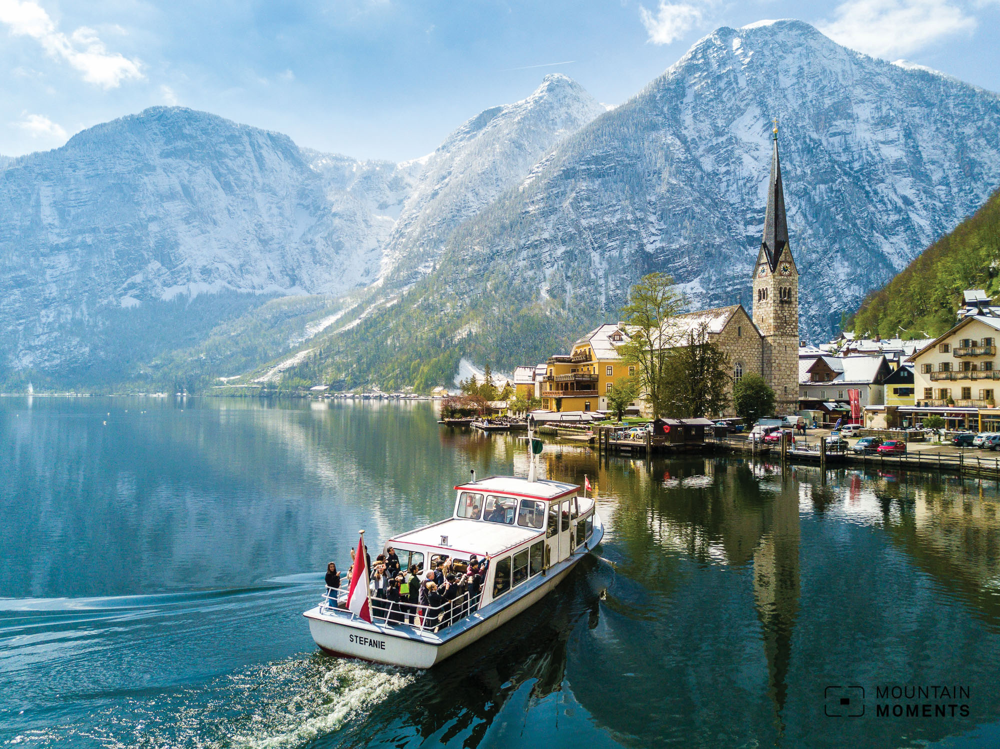

Bei einer Wanderung in alpinem Gelände sind viele Dinge zu beachten. Hier findest du mehr Informationen zu unseren Karten und zur allgemeinen Sicherheit in alpinen Gelände.
Wenn du auf das Fotosymbol klickst, siehst du ein Foto von unserem Lieblingsfotospot der Route.

Tourinformationen
 Startpunkt:
Startpunkt:  Zielpunkt:
Zielpunkt:  Schwierigkeitsgrad:
Schwierigkeitsgrad: - Länge: km
 Gehzeit: h
Gehzeit: h Höhenmeter Aufstieg: hm
Höhenmeter Aufstieg: hm- Höhenmeter Abstieg: hm
- Höchster Punkt: m ü. NN.